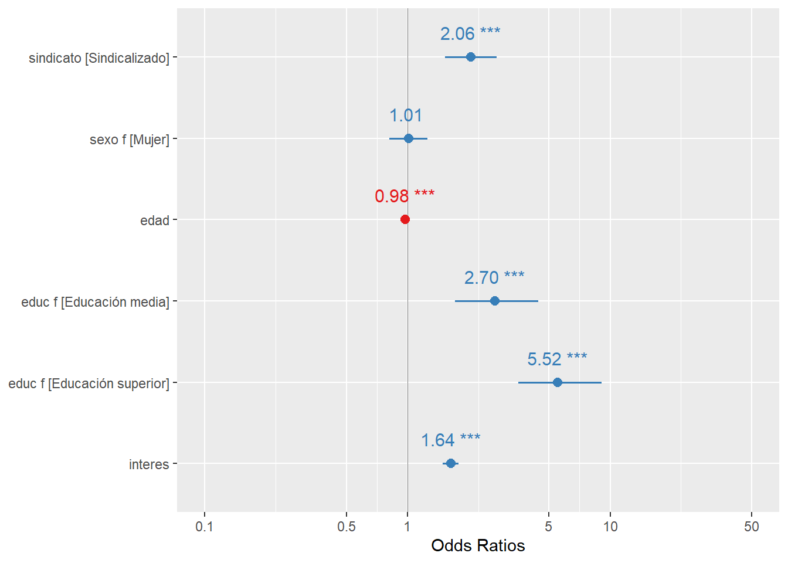
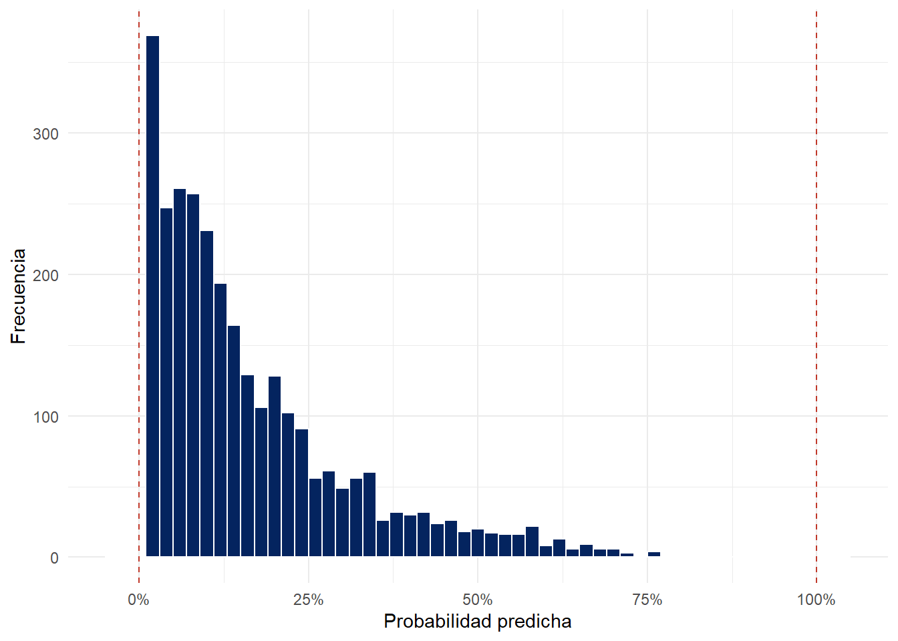
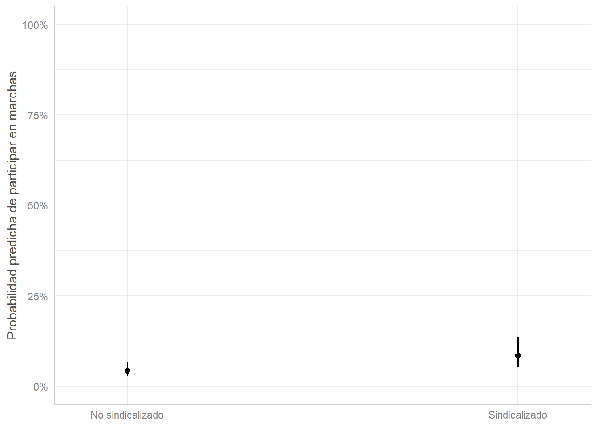
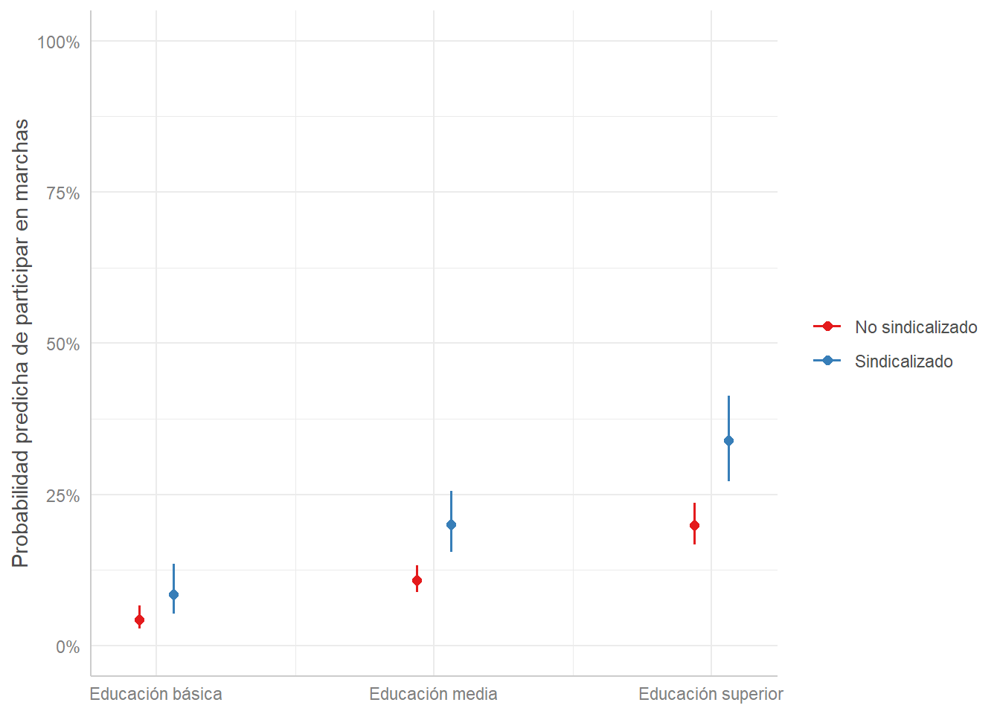
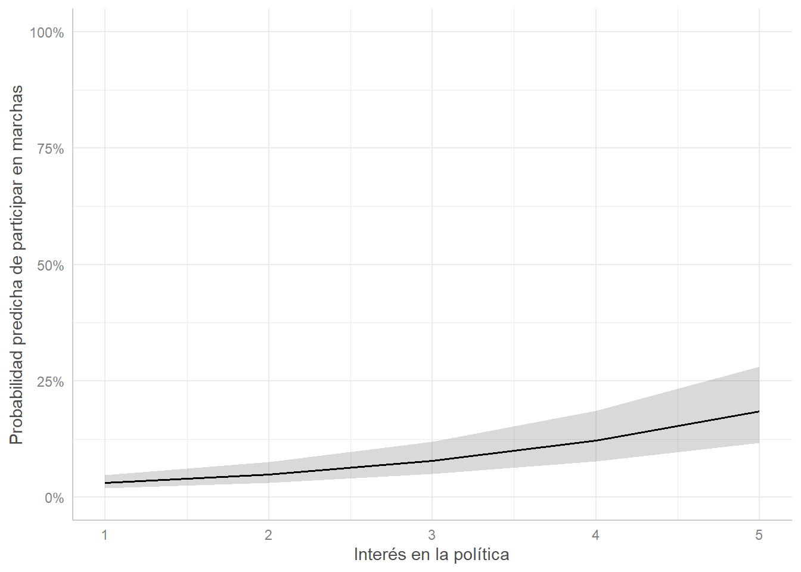
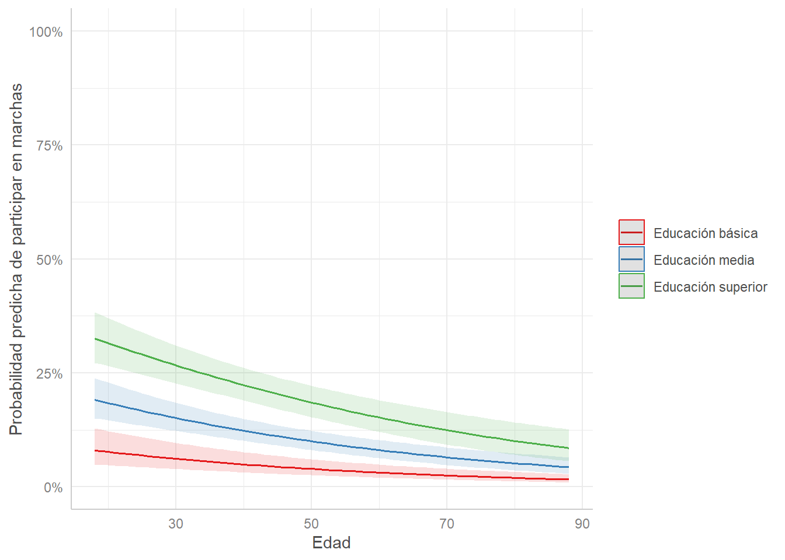
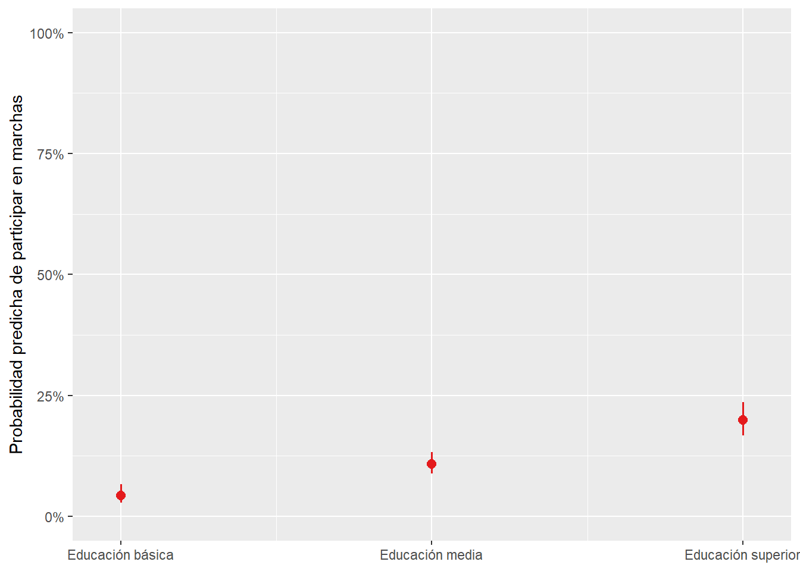

pacman::p_load(dplyr,
tidyr,
sjmisc,
sjPlot,
summarytools,
ggeffects,
ggplot2,
kableExtra,
DescTools)Práctico 10. Regresión logística III: modelos múltiples, probabilidades predichas y ajuste
Métodos estadísticos para Ciencias Sociales III
1 Presentación
1.1 Objetivo de la práctica
En el práctico anterior estimamos regresiones logísticas con un solo predictor y comprobamos que el odds ratio del modelo reproduce el que se obtiene de una tabla de contingencia. En esta guía daremos tres pasos más:
- Estimar modelos de regresión logística múltiple, que permiten el control estadístico
- Transformar los resultados del modelo en probabilidades predichas, la forma más comunicable de los resultados
- Evaluar el ajuste de los modelos y compararlos entre sí
Al terminar, usted debería ser capaz de:
- Interpretar coeficientes de una regresión logística múltiple en logit y en odds ratio
- Calcular a mano una probabilidad predicha a partir de los coeficientes
- Obtener y graficar probabilidades predichas con
ggeffects - Explicar por qué el efecto de un predictor sobre la probabilidad no es constante
- Comparar modelos mediante el test de razón de verosimilitud, el pseudo \(R^2\) y el AIC
1.2 La pregunta
La participación en marchas y manifestaciones es una de las formas de acción política no electoral más estudiadas por la sociología. Una línea de investigación clásica sostiene que la participación depende de los recursos de las personas, como la educación, y de su inserción en organizaciones que las movilizan, como los sindicatos.
En esta práctica intentaremos responder la pregunta: ¿existe una relación entre la afiliación a sindicatos y la participación en marchas? Y, si existe, ¿se mantiene al controlar por características sociodemográficas y por el interés en la política?
Como la participación en marchas será una variable dicotómica (ha participado o no ha participado), el modelo adecuado es la regresión logística.
2 Librerías
rm(list = ls())
options(scipen = 999)
st_options(bootstrap.css = FALSE,
plain.ascii = FALSE,
style = "rmarkdown",
dfSummary.silent = TRUE,
footnote = NA,
subtitle.emphasis = FALSE)3 Datos
Utilizaremos la base del curso, ELSOC 2016 (primera ola).
load(url("https://github.com/Kevin-carrasco/metod3-unab/raw/refs/heads/main/files/data/elsoc16-22.RData"))3.1 Variables
| Variable | Pregunta | Valores originales |
|---|---|---|
c08_02 |
Frecuencia con que asiste a marchas o manifestaciones pacíficas | 1 = Nunca, 2 = Casi nunca, 3 = A veces, 4 = Frecuentemente, 5 = Muy frecuentemente |
c12_04 |
Membresía en sindicato | 1 = No es miembro, 2 = Miembro inactivo, 3 = Miembro activo |
c13 |
Interés en la política | 1 = Nada interesado … 5 = Muy interesado |
m01 |
Nivel educacional | 1 a 10 |
m0_sexo |
Sexo | 1 = Hombre, 2 = Mujer |
m0_edad |
Edad | En años |
3.2 Preparación
proc_data <- elsoc_long_2016_2022.2 %>%
filter(ola == 1) %>%
select(c08_02, c12_04, c13, m01, m0_sexo, m0_edad) %>%
set_na(., na = c(-999, -888, -777, -666)) %>%
rename("marcha_frec" = c08_02,
"sindicato_orig" = c12_04,
"interes" = c13,
"educacion" = m01,
"sexo" = m0_sexo,
"edad" = m0_edad) %>%
na.omit()
nrow(proc_data)[1] 28993.2.1 Construcción de las variables
La variable dependiente distingue entre quienes nunca han asistido a una marcha y quienes lo han hecho al menos alguna vez (casi nunca, a veces, frecuentemente o muy frecuentemente). La afiliación sindical distingue entre quienes no son miembros de un sindicato y quienes sí lo son, de manera activa o inactiva.
proc_data <- proc_data %>%
mutate(marcha = ifelse(marcha_frec >= 2, 1, 0),
marcha = factor(marcha,
levels = c(0, 1),
labels = c("Nunca", "Alguna vez")),
sindicato = ifelse(sindicato_orig >= 2, 1, 0),
sindicato = factor(sindicato,
levels = c(0, 1),
labels = c("No sindicalizado", "Sindicalizado")),
sexo_f = factor(sexo,
levels = c(1, 2),
labels = c("Hombre", "Mujer")),
educ_rec = case_when(educacion <= 3 ~ 1,
educacion <= 5 ~ 2,
TRUE ~ 3),
educ_f = factor(educ_rec,
levels = c(1, 2, 3),
labels = c("Educación básica",
"Educación media",
"Educación superior")))Revisemos que la recodificación haya quedado bien:
table(proc_data$marcha_frec, proc_data$marcha)
Nunca Alguna vez
1 2415 0
2 0 173
3 0 219
4 0 70
5 0 22table(proc_data$sindicato_orig, proc_data$sindicato)
No sindicalizado Sindicalizado
1 2596 0
2 0 89
3 0 214El interés en la política se mantendrá como variable numérica de 1 a 5.
3.3 Explorar los datos
proc_data %>%
select(marcha, sindicato, sexo_f, edad, educ_f, interes) %>%
dfSummary(headings = FALSE) %>%
print(method = "render")| No | Variable | Stats / Values | Freqs (% of Valid) | Graph | Valid | Missing | ||||||||||||||||||||||||||||||||||
|---|---|---|---|---|---|---|---|---|---|---|---|---|---|---|---|---|---|---|---|---|---|---|---|---|---|---|---|---|---|---|---|---|---|---|---|---|---|---|---|---|
| 1 | marcha [factor] |
|
|
 |
2899 (100.0%) | 0 (0.0%) | ||||||||||||||||||||||||||||||||||
| 2 | sindicato [factor] |
|
|
 |
2899 (100.0%) | 0 (0.0%) | ||||||||||||||||||||||||||||||||||
| 3 | sexo_f [factor] |
|
|
 |
2899 (100.0%) | 0 (0.0%) | ||||||||||||||||||||||||||||||||||
| 4 | edad [numeric] |
|
63 distinct values |  |
2899 (100.0%) | 0 (0.0%) | ||||||||||||||||||||||||||||||||||
| 5 | educ_f [factor] |
|
|
 |
2899 (100.0%) | 0 (0.0%) | ||||||||||||||||||||||||||||||||||
| 6 | interes [numeric] |
|
|
 |
2899 (100.0%) | 0 (0.0%) |
4 Repaso: del odds ratio al modelo
4.1 Tabla de contingencia
tab_xtab(var.row = proc_data$marcha,
var.col = proc_data$sindicato,
title = "Participación en marchas según afiliación sindical",
show.col.prc = TRUE,
show.summary = FALSE)| marcha | sindicato | Total | |
|---|---|---|---|
| No sindicalizado | Sindicalizado | ||
| Nunca | 2204 84.9 % |
211 69.6 % |
2415 83.3 % |
| Alguna vez | 392 15.1 % |
92 30.4 % |
484 16.7 % |
| Total | 2596 100 % |
303 100 % |
2899 100 % |
Un 30,4% de las personas sindicalizadas ha asistido alguna vez a una marcha, frente a un 15,1% de quienes no están sindicalizadas.
4.2 Odds y odds ratio a mano
tabla <- table(proc_data$marcha, proc_data$sindicato)
odds_no_sind <- tabla["Alguna vez", "No sindicalizado"] / tabla["Nunca", "No sindicalizado"]
odds_sind <- tabla["Alguna vez", "Sindicalizado"] / tabla["Nunca", "Sindicalizado"]
c(no_sindicalizados = odds_no_sind, sindicalizados = odds_sind)no_sindicalizados sindicalizados
0.1778584 0.4360190 odds_sind / odds_no_sind[1] 2.451494\[OR = \frac{0.304/0.696}{0.151/0.849} = \frac{0.436}{0.178} = 2.45\]
Las chances de participar en marchas de las personas sindicalizadas son 2,45 veces las de quienes no están sindicalizadas.
4.3 El mismo resultado con glm
m0 <- glm(marcha ~ sindicato,
data = proc_data,
family = "binomial")
exp(coef(m0)) (Intercept) sindicatoSindicalizado
0.1778584 2.4514943 Como vimos en el práctico anterior, el coeficiente exponenciado reproduce el odds ratio de la tabla, y el intercepto exponenciado es el odds de la categoría de referencia (no sindicalizados).
5 Modelo de probabilidad lineal
Solo para comparación, estimemos un modelo lineal con todos los predictores que usaremos más adelante. Para ello necesitamos la dependiente en formato numérico 0 y 1:
proc_data$marcha_n <- ifelse(proc_data$marcha == "Alguna vez", 1, 0)
mpl <- lm(marcha_n ~ sindicato + sexo_f + edad + educ_f + interes,
data = proc_data)
summary(fitted.values(mpl)) Min. 1st Qu. Median Mean 3rd Qu. Max.
-0.08681 0.05270 0.13967 0.16695 0.25383 0.67315 sum(fitted.values(mpl) < 0 | fitted.values(mpl) > 1)[1] 286Casi 300 personas reciben una probabilidad predicha negativa. Al final de esta guía veremos que la regresión logística no tiene ese problema.
6 Regresión logística múltiple
6.1 Estimación
Estimaremos tres modelos, agregando predictores de manera sucesiva:
- M0: solo sindicalización
- M1: agrega variables sociodemográficas: sexo, edad y nivel educacional
- M2: agrega el interés en la política
m1 <- glm(marcha ~ sindicato + sexo_f + edad + educ_f,
data = proc_data, family = "binomial")
m2 <- glm(marcha ~ sindicato + sexo_f + edad + educ_f + interes,
data = proc_data, family = "binomial")6.2 Coeficientes logit
tab_model(m0, m1, m2,
transform = NULL,
show.se = FALSE,
show.ci = FALSE,
show.r2 = FALSE,
p.style = "stars",
digits = 3,
dv.labels = c("M0", "M1", "M2"),
pred.labels = c("(Intercepto)", "Sindicalizado", "Sexo (Mujer)", "Edad",
"Educación media", "Educación superior", "Interés en política"),
string.pred = "Predictores",
string.est = "Logit")| M0 | M1 | M2 | |
|---|---|---|---|
| Predictores | Logit | Logit | Logit |
| (Intercepto) | -1.727 *** | -2.128 *** | -2.860 *** |
| Sindicalizado | 0.897 *** | 0.780 *** | 0.721 *** |
| Sexo (Mujer) | -0.077 | 0.012 | |
| Edad | -0.023 *** | -0.024 *** | |
| Educación media | 1.116 *** | 0.994 *** | |
| Educación superior | 2.100 *** | 1.708 *** | |
| Interés en política | 0.492 *** | ||
| Observations | 2899 | 2899 | 2899 |
| * p<0.05 ** p<0.01 *** p<0.001 | |||
Recordemos qué podemos leer directamente de un coeficiente logit: el signo y la significación.
- El coeficiente de sindicalización es positivo y significativo (\(p<0,001\)) en los tres modelos: estar sindicalizado se asocia con mayores chances de participar en marchas
- En M1, el coeficiente de edad es negativo (−0,023) y significativo: a mayor edad, menores chances de participar en marchas, manteniendo constantes las demás variables
- En M2, el coeficiente de interés en la política es positivo (0,492) y significativo (\(p<0,001\))
- El coeficiente de sexo no es significativo en ninguno de los modelos
6.3 Odds ratio
Para interpretar la magnitud de los coeficientes, los exponenciamos:
tab_model(m0, m1, m2,
show.se = FALSE,
show.ci = FALSE,
show.r2 = FALSE,
p.style = "stars",
digits = 3,
dv.labels = c("M0", "M1", "M2"),
pred.labels = c("(Intercepto)", "Sindicalizado", "Sexo (Mujer)", "Edad",
"Educación media", "Educación superior", "Interés en política"),
string.pred = "Predictores",
string.est = "OR")| M0 | M1 | M2 | |
|---|---|---|---|
| Predictores | OR | OR | OR |
| (Intercepto) | 0.178 *** | 0.119 *** | 0.057 *** |
| Sindicalizado | 2.451 *** | 2.182 *** | 2.057 *** |
| Sexo (Mujer) | 0.926 | 1.012 | |
| Edad | 0.978 *** | 0.977 *** | |
| Educación media | 3.052 *** | 2.702 *** | |
| Educación superior | 8.166 *** | 5.520 *** | |
| Interés en política | 1.636 *** | ||
| Observations | 2899 | 2899 | 2899 |
| * p<0.05 ** p<0.01 *** p<0.001 | |||
6.3.1 Interpretación
Sindicalización (M1): controlando por sexo, edad y nivel educacional, las chances de participar en marchas de las personas sindicalizadas son 2,18 veces las de quienes no están sindicalizadas (\(p<0,001\))
Edad (M1): por cada año adicional, las chances de participar en marchas se multiplican por 0,978, es decir, disminuyen un 2,2%, manteniendo constantes las demás variables
Educación (M1): en comparación con quienes tienen educación básica, las chances de participar en marchas son 3,05 veces mayores para quienes tienen educación media y 8,17 veces mayores para quienes tienen educación superior, manteniendo constantes las demás variables (\(p<0,001\))
Interés en la política (M2): por cada punto adicional en la escala de interés, las chances de participar en marchas aumentan un 64% (OR = 1,64; \(p<0,001\)), manteniendo constantes las demás variables
Sexo: no hay diferencias significativas entre hombres y mujeres
6.4 ¿Qué ocurre al agregar el interés en la política?
Compare los OR de M1 y M2:
- El OR de sindicalización cambia poco: de 2,18 a 2,06
- El OR de educación superior baja de forma importante: de 8,17 a 5,52
proc_data %>%
group_by(educ_f) %>%
summarise(interes_promedio = mean(interes),
edad_promedio = mean(edad))# A tibble: 3 × 3
educ_f interes_promedio edad_promedio
<fct> <dbl> <dbl>
1 Educación básica 1.34 56.1
2 Educación media 1.58 45.4
3 Educación superior 2.14 40.4Quienes tienen educación superior presentan, en promedio, un mayor interés en la política. Una parte de la asociación entre educación y participación en marchas se explica, entonces, porque quienes tienen más educación también se interesan más en la política. La asociación con la sindicalización, en cambio, se mantiene casi intacta: no pasa por el interés en la política.
NotaLa misma lógica de la regresión lineal
Es el mismo fenómeno que estudiamos en la primera parte del curso con la parcialización: el coeficiente de un predictor cambia cuando se incorpora otro que está relacionado con él y con la variable dependiente.
6.5 Gráfico de coeficientes
La función plot_model del paquete sjPlot permite visualizar los odds ratio con sus intervalos de confianza:
plot_model(m2,
show.values = TRUE,
value.offset = 0.3,
vline.color = "gray50",
title = "")
Un coeficiente es estadísticamente significativo cuando su intervalo de confianza no cruza la línea vertical del 1.
7 Probabilidades predichas
7.1 Odds no son probabilidades
Los odds ratio indican cuánto se multiplican las chances, pero no qué tan probable es que alguien participe en una marcha. Un OR de 2,06 no significa que la probabilidad sea el doble.
Además, el OR es una medida relativa: un mismo OR puede implicar cambios muy distintos en la probabilidad, dependiendo del punto de partida.
data.frame(p_inicial = c(0.01, 0.10, 0.25, 0.50, 0.75, 0.90)) %>%
mutate(odds_inicial = p_inicial / (1 - p_inicial),
odds_final = odds_inicial * 2,
p_final = odds_final / (1 + odds_final),
cambio_puntos = (p_final - p_inicial) * 100) %>%
kable(digits = 3,
col.names = c("Probabilidad inicial", "Odds inicial", "Odds × 2",
"Probabilidad final", "Cambio (puntos %)")) %>%
kable_styling(full_width = FALSE)| Probabilidad inicial | Odds inicial | Odds × 2 | Probabilidad final | Cambio (puntos %) |
|---|---|---|---|---|
| 0.01 | 0.010 | 0.020 | 0.020 | 0.980 |
| 0.10 | 0.111 | 0.222 | 0.182 | 8.182 |
| 0.25 | 0.333 | 0.667 | 0.400 | 15.000 |
| 0.50 | 1.000 | 2.000 | 0.667 | 16.667 |
| 0.75 | 3.000 | 6.000 | 0.857 | 10.714 |
| 0.90 | 9.000 | 18.000 | 0.947 | 4.737 |
En todas las filas el OR es 2, pero el cambio en la probabilidad va de 1 a casi 17 puntos porcentuales.
7.2 Cálculo a mano
Partamos por el modelo más simple, M0. El procedimiento tiene tres pasos.
coef(m0) (Intercept) sindicatoSindicalizado
-1.7267673 0.8966978 Paso 1. Logit predicho. Se reemplazan los valores de las variables en la ecuación, igual que en regresión lineal:
\[logit_{sindicalizados} = -1.727 + (0.897 \times 1) = -0.830\]
\[logit_{no\ sindicalizados} = -1.727 + (0.897 \times 0) = -1.727\]
Paso 2. Odds. Se exponencia el logit:
\[Odds_{sindicalizados} = e^{-0.830} = 0.436\]
\[Odds_{no\ sindicalizados} = e^{-1.727} = 0.178\]
Paso 3. Probabilidad. Se divide el odds por uno más el odds:
\[p = \frac{Odds}{1+Odds} = \frac{e^{logit}}{1+e^{logit}}\]
\[p_{sindicalizados} = \frac{0.436}{1.436} = 0.304\]
\[p_{no\ sindicalizados} = \frac{0.178}{1.178} = 0.151\]
logit_sind <- coef(m0)[1] + coef(m0)[2]
logit_no_sind <- coef(m0)[1]
exp(logit_sind) / (1 + exp(logit_sind))(Intercept)
0.3036304 exp(logit_no_sind) / (1 + exp(logit_no_sind))(Intercept)
0.1510015 La probabilidad predicha de participar en marchas es de 30,4% para las personas sindicalizadas y de 15,1% para quienes no lo están. Son exactamente los porcentajes de la tabla de contingencia: con un único predictor categórico, las probabilidades predichas reproducen las proporciones observadas en cada grupo.
TipUn atajo en R
La función plogis() hace los pasos 2 y 3 en uno: transforma un logit directamente en probabilidad.
plogis(logit_sind)(Intercept)
0.3036304 7.3 Con predict()
La función predict() calcula probabilidades predichas para los perfiles que le indiquemos en newdata. El argumento type = "response" pide el resultado en la escala de la probabilidad; sin él, predict() entrega logits.
Calculemos la probabilidad predicha con el modelo completo (M2) para dos personas que solo difieren en su afiliación sindical: mujeres de 25 años, con educación superior y un interés en la política de 4 (bastante interesadas).
perfiles <- data.frame(sindicato = c("No sindicalizado", "Sindicalizado"),
sexo_f = "Mujer",
edad = 25,
educ_f = "Educación superior",
interes = 4)
predict(m2, newdata = perfiles, type = "response") 1 2
0.5601036 0.7237369 7.3.1 Ejercicio
Modifique el objeto perfiles para calcular la probabilidad predicha de esas mismas dos personas si tuvieran 60 años y un interés en la política de 1 (nada interesadas). ¿Cuánto cambia la diferencia entre sindicalizadas y no sindicalizadas?
Ver solución
perfiles2 <- perfiles %>%
mutate(edad = 60,
interes = 1)
predict(m2, newdata = perfiles2, type = "response") 1 2
0.1132003 0.2080089 7.4 Predicciones para todos los casos
Sin newdata, predict() calcula la probabilidad predicha de cada persona de la muestra según sus propios valores en las variables independientes:
proc_data$prob_pred <- predict(m2, type = "response")
summary(proc_data$prob_pred) Min. 1st Qu. Median Mean 3rd Qu. Max.
0.01183 0.05881 0.11937 0.16695 0.22757 0.81609 ggplot(proc_data, aes(x = prob_pred)) +
geom_histogram(binwidth = 0.02, fill = "#04245f", color = "white") +
geom_vline(xintercept = c(0, 1), color = "#c0392b", linetype = "dashed") +
scale_x_continuous(limits = c(-0.05, 1.05), labels = scales::percent) +
labs(x = "Probabilidad predicha", y = "Frecuencia") +
theme_minimal()
A diferencia del modelo de probabilidad lineal, todas las probabilidades predichas se encuentran entre 0 y 1.
7.5 Con ggeffects
La función ggpredict() del paquete ggeffects, que ya usamos con regresión lineal, calcula probabilidades predichas con sus intervalos de confianza para los valores de la variable que indiquemos en terms.
7.5.1 Una variable categórica
pred_sind <- ggpredict(m2, terms = "sindicato")
pred_sind# Predicted probabilities of marcha
sindicato | Predicted | 95% CI
-----------------------------------------
No sindicalizado | 0.04 | 0.03, 0.07
Sindicalizado | 0.09 | 0.05, 0.14
Adjusted for:
* sexo_f = Hombre
* edad = 46.05
* educ_f = Educación básica
* interes = 1.72
Importante¿Dónde quedan las demás variables?
ggpredict() fija las variables que no están en terms: las continuas en su promedio y las categóricas en su categoría de referencia. La salida lo indica bajo Adjusted for.
En este caso, las probabilidades corresponden a hombres con educación básica, de edad promedio y con un interés en la política promedio. Como la participación en marchas es muy baja en ese grupo, las probabilidades predichas también lo son.
plot(pred_sind) +
scale_y_continuous(limits = c(0, 1), labels = scales::percent) +
labs(title = NULL,
x = NULL,
y = "Probabilidad predicha de participar en marchas")
Como en regresión lineal, el eje \(y\) muestra el rango completo de la variable dependiente, de 0% a 100%. Un eje recortado haría parecer la diferencia mucho mayor de lo que es.
7.5.2 Dos variables categóricas
Para ver la diferencia entre sindicalizados y no sindicalizados en los distintos niveles educacionales, indicamos ambas variables en terms. La primera va en el eje \(x\) y la segunda se representa con colores:
ggpredict(m2, terms = c("educ_f", "sindicato")) %>%
plot() +
scale_y_continuous(limits = c(0, 1), labels = scales::percent) +
labs(title = NULL,
x = NULL,
y = "Probabilidad predicha de participar en marchas",
color = NULL)
El OR de sindicalización es el mismo en los tres niveles educacionales, pero la diferencia en puntos porcentuales entre sindicalizados y no sindicalizados es mucho mayor entre quienes tienen educación superior.
7.5.3 Una variable continua
pred_int <- ggpredict(m2, terms = "interes [1:5]")
pred_int# Predicted probabilities of marcha
interes | Predicted | 95% CI
--------------------------------
1 | 0.03 | 0.02, 0.05
2 | 0.05 | 0.03, 0.08
3 | 0.08 | 0.05, 0.12
4 | 0.12 | 0.08, 0.19
5 | 0.19 | 0.12, 0.28
Adjusted for:
* sindicato = No sindicalizado
* sexo_f = Hombre
* edad = 46.05
* educ_f = Educación básicaplot(pred_int) +
scale_y_continuous(limits = c(0, 1), labels = scales::percent) +
labs(title = NULL,
x = "Interés en la política",
y = "Probabilidad predicha de participar en marchas")
7.6 El efecto no es constante
El OR de interés en la política es el mismo para cualquier punto de la escala: cada punto adicional multiplica las chances por 1,64. Pero ¿ocurre lo mismo con la probabilidad?
as.data.frame(pred_int) %>%
select(x, predicted) %>%
mutate(diferencia = predicted - lag(predicted)) %>%
kable(digits = 3,
col.names = c("Interés en la política", "Probabilidad predicha",
"Diferencia con el valor anterior")) %>%
kable_styling(full_width = FALSE)| Interés en la política | Probabilidad predicha | Diferencia con el valor anterior |
|---|---|---|
| 1 | 0.031 | NA |
| 2 | 0.049 | 0.019 |
| 3 | 0.078 | 0.029 |
| 4 | 0.122 | 0.044 |
| 5 | 0.185 | 0.063 |
La diferencia en la probabilidad aumenta a medida que crece el interés. Pasar de 1 a 2 en la escala suma menos puntos porcentuales que pasar de 4 a 5, aunque en ambos casos las chances se multiplican por lo mismo.
ImportanteUna diferencia central con la regresión lineal
En regresión lineal, el efecto de \(x\) sobre \(y\) es el mismo en todo su rango. En regresión logística, el efecto sobre la probabilidad depende del punto de partida: es mayor cuando la probabilidad está cerca de 50%, y se aplana cerca de 0 y de 1.
Por eso las probabilidades predichas se reportan para valores concretos de las variables, o para perfiles de personas.
7.7 Una variable continua y una categórica
ggpredict(m2, terms = c("edad [18:88]", "educ_f")) %>%
plot() +
scale_y_continuous(limits = c(0, 1), labels = scales::percent) +
labs(title = NULL,
x = "Edad",
y = "Probabilidad predicha de participar en marchas",
color = NULL)
Las tres curvas descienden con la edad, pero la distancia entre ellas es mayor entre los más jóvenes, donde las probabilidades son más altas.
7.8 Tabla de perfiles
ggpredict(m2, terms = c("interes [1,3,5]", "sindicato")) %>%
as.data.frame() %>%
select(x, group, predicted) %>%
pivot_wider(names_from = group, values_from = predicted) %>%
kable(digits = 3,
col.names = c("Interés en la política", "No sindicalizado", "Sindicalizado")) %>%
kable_styling(full_width = FALSE)| Interés en la política | No sindicalizado | Sindicalizado |
|---|---|---|
| 1 | 0.031 | 0.061 |
| 3 | 0.078 | 0.149 |
| 5 | 0.185 | 0.319 |
7.9 Una alternativa con sjPlot
La función plot_model con type = "pred" utiliza por dentro ggeffects, por lo que entrega las mismas probabilidades:
plot_model(m2, type = "pred", terms = "educ_f") +
scale_y_continuous(limits = c(0, 1), labels = scales::percent) +
labs(title = NULL,
x = NULL,
y = "Probabilidad predicha de participar en marchas")
8 Bondad de ajuste
En regresión logística no existe el \(R^2\) tal como lo conocemos, porque una variable dicotómica no tiene varianza en el mismo sentido que una continua. El ajuste se evalúa a partir de la log-verosimilitud del modelo, y siempre en términos comparativos.
8.1 Log-verosimilitud y devianza
logLik(m0)'log Lik.' -1287.867 (df=2)logLik(m1)'log Lik.' -1155.883 (df=6)logLik(m2)'log Lik.' -1095.966 (df=7)Mientras más cercana a 0 es la log-verosimilitud, mejor es el ajuste. La devianza es \(-2\) veces la log-verosimilitud, y mientras menor, mejor:
-2 * logLik(m2)'log Lik.' 2191.932 (df=7)m2$deviance[1] 2191.9328.2 Test de razón de verosimilitud
El test de razón de verosimilitud compara las devianzas de dos modelos. Si la devianza se reduce de manera significativa al agregar predictores, el modelo más completo ofrece un mejor ajuste.
anova(m0, m1, test = "Chisq")Analysis of Deviance Table
Model 1: marcha ~ sindicato
Model 2: marcha ~ sindicato + sexo_f + edad + educ_f
Resid. Df Resid. Dev Df Deviance Pr(>Chi)
1 2897 2575.7
2 2893 2311.8 4 263.97 < 0.00000000000000022 ***
---
Signif. codes: 0 '***' 0.001 '**' 0.01 '*' 0.05 '.' 0.1 ' ' 1Agregar las variables sociodemográficas mejora significativamente el ajuste (\(p<0,001\)).
anova(m1, m2, test = "Chisq")Analysis of Deviance Table
Model 1: marcha ~ sindicato + sexo_f + edad + educ_f
Model 2: marcha ~ sindicato + sexo_f + edad + educ_f + interes
Resid. Df Resid. Dev Df Deviance Pr(>Chi)
1 2893 2311.8
2 2892 2191.9 1 119.83 < 0.00000000000000022 ***
---
Signif. codes: 0 '***' 0.001 '**' 0.01 '*' 0.05 '.' 0.1 ' ' 1Agregar el interés en la política también lo mejora de manera significativa (\(p<0,001\)).
La función anova también puede comparar varios modelos a la vez, cada uno con el anterior:
anova(m0, m1, m2, test = "Chisq")Analysis of Deviance Table
Model 1: marcha ~ sindicato
Model 2: marcha ~ sindicato + sexo_f + edad + educ_f
Model 3: marcha ~ sindicato + sexo_f + edad + educ_f + interes
Resid. Df Resid. Dev Df Deviance Pr(>Chi)
1 2897 2575.7
2 2893 2311.8 4 263.97 < 0.00000000000000022 ***
3 2892 2191.9 1 119.83 < 0.00000000000000022 ***
---
Signif. codes: 0 '***' 0.001 '**' 0.01 '*' 0.05 '.' 0.1 ' ' 18.2.1 Comparación con el modelo nulo
El modelo nulo no tiene predictores, solo intercepto. Es el equivalente a predecir con el promedio en regresión lineal.
m_nulo <- glm(marcha ~ 1, data = proc_data, family = "binomial")
anova(m_nulo, m2, test = "Chisq")Analysis of Deviance Table
Model 1: marcha ~ 1
Model 2: marcha ~ sindicato + sexo_f + edad + educ_f + interes
Resid. Df Resid. Dev Df Deviance Pr(>Chi)
1 2898 2615.0
2 2892 2191.9 6 423.1 < 0.00000000000000022 ***
---
Signif. codes: 0 '***' 0.001 '**' 0.01 '*' 0.05 '.' 0.1 ' ' 18.3 Pseudo \(R^2\) de McFadden
\[R^2_{McFadden} = 1 - \frac{LL_{modelo}}{LL_{nulo}}\]
1 - (logLik(m2) / logLik(m_nulo))'log Lik.' 0.161796 (df=7)También se puede obtener con DescTools, junto a otras versiones de pseudo \(R^2\):
PseudoR2(m2, which = c("McFadden", "Nagelkerke", "CoxSnell")) McFadden Nagelkerke CoxSnell
0.1617960 0.2285138 0.1357970
AdvertenciaCómo leer un pseudo \(R^2\)
Los pseudo \(R^2\) no se interpretan como porcentaje de varianza explicada. Sirven para comparar modelos estimados sobre los mismos datos. Sus valores suelen ser bajos, y eso no invalida el modelo.
8.4 Criterio de información de Akaike (AIC)
El AIC evalúa el ajuste penalizando por la cantidad de parámetros del modelo, de forma análoga al \(R^2\) ajustado. A menor AIC, mejor ajuste:
\[AIC = -2(LL) + 2K\]
AIC(m0, m1, m2) df AIC
m0 2 2579.734
m1 6 2323.766
m2 7 2205.9328.5 Resumen del ajuste
modelos <- list(m_nulo, m0, m1, m2)
data.frame(modelo = c("Nulo", "M0", "M1", "M2"),
ll = sapply(modelos, function(m) as.numeric(logLik(m))),
devianza = sapply(modelos, deviance),
aic = sapply(modelos, AIC)) %>%
mutate(mcfadden = 1 - ll / ll[1]) %>%
kable(digits = 3,
col.names = c("Modelo", "Log-verosimilitud", "Devianza", "AIC", "McFadden R²")) %>%
kable_styling(full_width = FALSE)| Modelo | Log-verosimilitud | Devianza | AIC | McFadden R² |
|---|---|---|---|---|
| Nulo | -1307.517 | 2615.035 | 2617.035 | 0.000 |
| M0 | -1287.867 | 2575.734 | 2579.734 | 0.015 |
| M1 | -1155.883 | 2311.766 | 2323.766 | 0.116 |
| M2 | -1095.966 | 2191.932 | 2205.932 | 0.162 |
Todos los indicadores coinciden: M2 es el modelo con mejor ajuste. El mayor salto se produce al incorporar las variables sociodemográficas, en particular la educación y la edad.
9 Cómo reportar
Un reporte de regresión logística suele incluir:
- Una tabla con los coeficientes, indicando si se presentan en logit o en odds ratio, con su significación
- La interpretación de los coeficientes principales en odds ratio, señalando las variables de control
- Probabilidades predichas para perfiles relevantes, en una tabla o un gráfico con el eje \(y\) completo
- Indicadores de ajuste: al menos el test de razón de verosimilitud y un pseudo \(R^2\)
10 Ejercicios
10.1 Interpretación
Con la tabla de odds ratio de M2, interprete el coeficiente de educación media. ¿Es estadísticamente significativo?
Exprese el OR de edad de M2 como cambio porcentual en las chances. ¿Cuánto cambian las chances con 10 años más de edad?
Un estudiante afirma: “según M2, la probabilidad de participar en marchas aumenta un 64% por cada punto de interés en la política”. ¿Qué está mal en esta afirmación?
Calcule a mano, con los coeficientes logit de M2, la probabilidad predicha de participar en marchas para un hombre de 40 años, sindicalizado, con educación media y un interés en la política de 3. Compruebe su resultado con
predict().
10.2 Firma de peticiones
La variable
c08_01registra la frecuencia con que la persona firma cartas o peticiones apoyando una causa, con los mismos valores que la variable de marchas. Constrúyala como variable dicotómica (nunca / alguna vez).Estime una secuencia de modelos de regresión logística para explicar la firma de peticiones, a partir de las siguientes variables: afiliación sindical, membresía en junta de vecinos u otra organización vecinal (
c12_01, mismos valores que la membresía sindical), interés en la política, edad, sexo y nivel educacional. Antes de estimar los modelos, reflexione:- ¿Qué variable sería el principal predictor de firmar una petición?
- ¿Se deben agregar primero las variables sociodemográficas o las de participación en organizaciones?
- ¿Van todas las variables independientes juntas, o se agregan unas primero y otras después?
Interprete los coeficientes de los modelos estimados en odds ratio.
Estime y grafique las probabilidades predichas de firmar una petición según membresía en junta de vecinos y según interés en la política.
Compare los modelos mediante el test de razón de verosimilitud y el pseudo \(R^2\) de McFadden, y señale cuál ofrece el mejor ajuste.